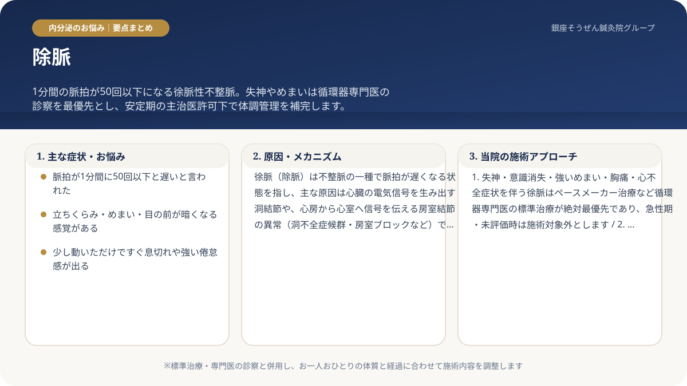

除脈の鍼灸
1分間の脈拍が50回以下になる徐脈性不整脈。失神やめまいは循環器専門医の診察を最優先とし、安定期の主治医許可下で体調管理を補完します。
まず知っておきたい要点と改善の流れ

徐脈（除脈）は不整脈の一種で脈拍が遅くなる状態を指し、主な原因は心臓の電気信号を生み出す洞結節や、心房から心室へ信号を伝える房室結節の異常（洞不全症候群・房室ブロックなど）です。スポーツ心臓など生理的な場合もありますが、病的な徐脈では脳や全身への血流が不足し、めまい、強い倦怠感、息切れ、失神などを引き起こすため循環器内科での精査が不可欠です。
このようなお悩みはありませんか？
- ✓脈拍が1分間に50回以下と遅いと言われた
- ✓立ちくらみ・めまい・目の前が暗くなる感覚がある
- ✓少し動いただけですぐ息切れや強い倦怠感が出る
- ✓失神や意識が遠のく発作がないか不安に感じている
当院の施術アプローチ・改善の流れ
なぜ鍼灸で改善へ向かうのか？（作用機序の図解）
除脈に対する鍼灸は、神経-内分泌-免疫ネットワークと末梢循環の調整機序を通じて、お体本来の回復力を引き出します。

内科専門医の薬物・食事管理を前提に、足三里・三陰交・背部経穴へ安全にアプローチします。
ストレス由来の交感神経過緊張を鎮め、ホルモン分泌や血糖・尿酸管理を乱す疲労要因を軽減します。
手足や内臓の血流を促し、合併しやすいしびれ・胃もたれ・倦怠感・関節痛の負担を和らげます。
皮膚衛生や低刺激を徹底し、日々の生活習慣改善を続けやすい安定した体調づくりを支えます。
院長YouTube解説・関連動画
公開日：２０２１年 ２月２３日
更新日：２０２１年 ６月３０日
本日は除脈について解説させていただきます。
☆本記事の内容
- •除脈とは
- •除脈の原因
- •除脈の症状
- •除脈の改善方法
- •除脈のまとめ
- •徐脈とは、不整脈で脈が遅くなること
- •徐脈の主な原因は、洞結節と房室結節に異常が起こること
- •徐脈の症状は、めまいや失神、息切れ、だるさや足のむくみなど
- •症状が強い場合はペースメーカーを使う
- •ペースメーカーの注意点
銀座そうぜん鍼灸院の宗前です。
このページを書いている私は、鍼灸師として１３年、担当した利用者様数８０，０００人を誇り、病気の休職者３００人を社会復帰できるまで回復させてきた実績があります。
徐脈の症状は、めまいや失神、息切れ、だるさや足のむくみなど
徐脈の症状は、めまいや失神、過度の疲労、息切れ、だるさや足のむくみなどです。
除脈では脈拍が少なくなり、身体中に日常生活や運動に必要なだけの十分な酸素を心臓が届けることができなくなります。そのためにこのような症状が起きるのです。
徐脈はすぐに命に関わるということはあまりありません。そのため、自覚症状がない場合は経過を観察して様子を見ます。
しかし、除脈によって失神の症状が起きる場合、事故につながる危険があります。そのため、ペースメーカーを使うこともあります。
他にも息切れやだるさなどの症状によって、日常生活を送る上で支障がある場合や1分間の脈拍の回数が40回以下になり、すぐに息切れが起こる場合などは、ペースメーカーを使うことがあります。
ペースメーカーは電磁波の影響によって誤作動することもあります。そのため、日常生活を送る上で注意が必要なこともあります。
まず注意することは、携帯電話の使用です。携帯電話はペースメーカーの本体から15cm以上離して使うことが大切です。携帯電話を使う時は本体と反対側の手で持つようにすることも必要です。
肩こりを改善する機器や電気風呂、体脂肪計なども注意が必要です。このような機械は強い電磁波が発生します。そのため、ペースメーカーを使っている場合は使うことができません。
IH調理器やIH炊飯器も電磁波が発生します。炊飯の時だけではなく保温をする時も電磁波は発生していますが、ペースメーカーを近づけなければ問題はないため、気にしすぎる必要はありません。
ペースメーカーを使うことで注意することも多くありますが、きちんと注意をすれば今まで通り日常生活を送ることができます。
メニエール病・難治性めまい・耳鳴りのツボ図解
実際の施術ではお一人おひとりの体質・症状に合わせて選穴しますが、メニエール病・前庭性片頭痛・耳鳴り・難治性めまいの内耳循環ケアの臨床でよく用いられる代表的なツボの目安です。

📌 代表的なツボの詳細一覧表を開く（6穴） ▼
| ツボ名 | 位置の目安 | 主な狙い | セルフケアの注意点 |
|---|---|---|---|
| 聴宮（ちょうきゅう） | 耳の穴の前、口を開けるとくぼむ場所 | 内耳周囲の微小循環改善・耳閉感や耳鳴りケア | 強く押さず口を少し開けて優しく触れます。 |
| 翳風（えいふう） | 耳たぶのすぐ後ろのくぼみ | 内耳・三叉神経・顔面周囲の血流とリンパ循環促進 | めまい発作直後は首を動かさず静かに温めます。 |
| 風池（ふうち） | 後頭部の生え際のくぼみ | 後頭下筋群の緊張緩和・椎骨動脈血流サポート | 親指で上向きに優しく支えるように押します。 |
| 完骨（かんこつ） | 耳の後ろの出っ張った骨の下後ろ | 平衡感覚の安定・睡眠の質改善 | 左右の張りを比べながら優しく緩めます。 |
| 内関（ないかん） | 手首の横ジワから指3本分肘寄りの中央 | めまいに伴う吐き気・自律神経発作の鎮静 | めまいが出そうなときのセルフ指圧にも有効です。 |
| 太衝（たいしょう） | 足の甲、親指と人差し指の骨の間 | ストレス性の内リンパ水腫悪化・イライラの緩和 | 深呼吸と合わせて3〜5秒ずつ押します。 |
国際査読論文の科学的エビデンス
国際的な医学データベース（PubMed・Cochrane等）で報告されているメニエール病・前庭性片頭痛・耳鳴り・難治性めまいの内耳循環ケア領域の代表的な査読済み鍼灸研究をまとめています（標準治療との併用や研究上の限界を含めて正確に掲載）。
📚 査読論文データ・PubMed出典リンクを開く（4件） ▼
| 年・研究デザイン | 対象・規模 | 主な結果 | 限界・出典 |
|---|---|---|---|
| 2026年 メタ解析 | 2型糖尿病 20 RCTs（n=1,479） | 空腹時血糖（SMD -0.52, p=0.009）、HbA1c（SMD -0.76, p=0.002）、HOMA-IR（p<0.0001）を有意低減。 | 将来研究のばらつき懸念。食事・運動・薬物療法の継続必須。 Postgrad Med J (PMID: 41052150) |
| 2025年 メタ解析 | 糖尿病性末梢神経障害（DPN）14 RCTs（n=1,169） | 偽鍼比でVAS疼痛-1.44cm、神経症状スコアTCSSも有意改善（WMD -1.22）。 | GRADE確実性は低い。足部の熱傷・感染予防に細心の注意。 Curr Pain Headache Rep (PMID: 40220243) |
| 2024年 メタ解析 | 橋本病（慢性甲状腺炎）14 RCTs（n=1,020） | レボチロキシン単独比でTPOAb・TGAb低下およびTSH・FT3・FT4の調整を示唆（p<0.00001）。 | 中国国内RCT中心・盲検化不足。甲状腺薬の自己中断は厳禁。 Medicine (PMID: 38428856) |
| 2024年 メタ解析 | 単純性肥満 25 RCTs（n=2,018・生活習慣併用） | 生活習慣単独比で体重-4.73・BMI -2.11・腹囲-4.96（p<0.00001）、中性脂肪・LDLも有意改善。 | 介入期間・方法の異質性高、長期リバウンド防止は要検証。 Diabetes Metab Syndr Obes (PMID: 39582784) |
参考文献・出典
- 2026年 メタ解析（2型糖尿病 20 RCTs（n=1,479））— Postgrad Med J (PMID: 41052150)
- 2025年 メタ解析（糖尿病性末梢神経障害（DPN）14 RCTs（n=1,169））— Curr Pain Headache Rep (PMID: 40220243)
- 2024年 メタ解析（橋本病（慢性甲状腺炎）14 RCTs（n=1,020））— Medicine (PMID: 38428856)
- 2024年 メタ解析（単純性肥満 25 RCTs（n=2,018・生活習慣併用））— Diabetes Metab Syndr Obes (PMID: 39582784)
よくある質問（FAQ）
Q. 脈が遅いと言われましたが鍼灸で改善できますか？▼
Q. どのような症状が出たらすぐ病院へ行くべきですか？▼
あわせて読まれる関連疾患（内分泌のお悩み）
皮膚の下に余分な水分がたまる状態。腎臓・心臓・肝臓等の基礎疾患確認を優先し、血流低下や自律神経由来のむくみを穏やかに整えます。
脳下垂体の良性腫瘍により成長ホルモンが過剰分泌される疾患。専門医の手術・薬物療法と合併症管理を最優先し、安定期の体調ケアを補完します。
下垂体前葉ホルモンの分泌低下で全身の代謝や血圧・性機能に影響する疾患。専門医のホルモン補充を最優先し、安定期の体調管理を補完します。
粘液腫・皮膚色素斑・内分泌機能亢進を伴う多発性腫瘍症候群。専門医の定期検査と治療を最優先し、安定期の心身ケアを穏やかに補完します。
植物ステロールが体内に蓄積し黄色腫や早発性動脈硬化を招く希少遺伝疾患。専門医の管理を軸に、安定期の体調・自律神経ケアを補完します。
異常蛋白質アミロイドが心臓・腎臓・神経等の臓器に沈着する指定難病群。専門医の病型別標準治療を最優先し、安定期の許可下のみ穏やかにケアします。
CLINICAL RECOVERY CASES
✨ 実際の臨床改善事例・回復経過を見る
銀座本院をはじめ各院での実際の改善事例を症状別に絞り込んでご確認いただけます。
おひとりで悩まず、まずはご相談ください
銀座本院・川口・大宮・横浜・博多・田無の各院でご予約を承っております。